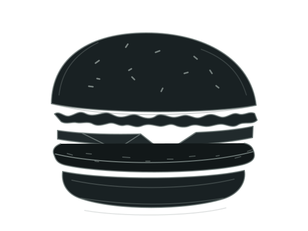
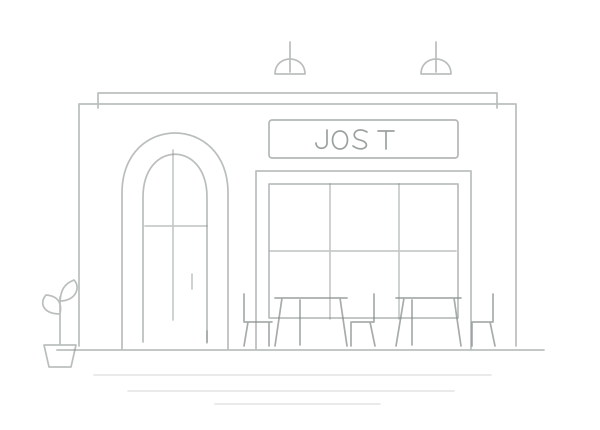

O ESSENCIAL
FOTO DO BURGER
BRUSQUE, SC · HAMBURGUERIA ARTESANAL
JOST
BURGER.
Hambúrguer artesanal.
Sabor de verdade.
Pão macio, carne no ponto e aquele sabor que fica na memória. Feito com cuidado, do primeiro ingrediente à última mordida.
- Ingredientes selecionados
- Sabor marcante
- Feito com paixão
FEITO COM
PAIXÃO

NOSSO ESPAÇO

02 / NOSSA ESSÊNCIA
FEITA PARA QUEM
AMA BURGER.
Tem coisa que não precisa de complicação: bons ingredientes, preparo cuidadoso e vontade de fazer bem-feito.
Essa é a proposta da Jost Burger. Um lugar em Brusque para reunir a turma, aproveitar o momento e descobrir como um bom hambúrguer pode transformar o seu dia.
Qualidade em primeiro lugar
Cuidado em cada escolha, sabor em cada detalhe.
Ambiente acolhedor
Seu lugar para uma pausa e uma boa conversa.
Clientes que sempre voltam
Uma experiência que dá vontade de repetir.
03 / A CASA É SUA
VENHA NOS
VISITAR.
Boa companhia, conversa sem pressa e um burger caprichado. Seu próximo encontro tem lugar.
ENCONTRE A JOST
Brusque, Santa CatarinaEndereço completo a confirmar.HORÁRIO DA CASA
Terça a domingo · 18h às 23hHorário ilustrativo, a confirmar.
BATEU A FOME?
SEU JOST BURGER.
A UM PEDIDO
DE DISTÂNCIA.
PEÇA PELO ANOTA AI
Escolha seu favorito no cardápio digital e deixe o resto com a gente.
Pedir pelo Anota AI Pedidos em breve. Nesta prévia, o botão abre o site do Anota AI.